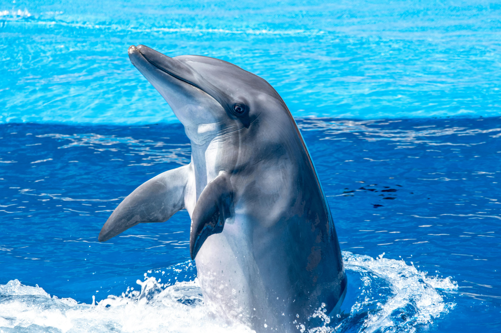

🐾 معلومات سريعة & سهلة
استعرض بطاقات الثدييات الرائعة، كل بطاقة تحتوي على نبذة مختصرة بالعربية ورابط للموسوعة الحرة (ويكيبيديا) لمعرفة المزيد.

🦁 الأسد
الأسد هو قط كبير يعيش في إفريقيا وأجزاء من الهند. يتميز بجسم عضلي قوي وذكاء اجتماعي، ويعيش ضمن مجموعات تُسمى "الزمر". يعد قمة السلسلة الغذائية.
اقرأ المزيد على ويكيبيديا
🐘 الفيل الأفريقي
أضخم حيوان بري على الأرض، يتميز بآذانه الكبيرة وخرطومه الطويل. يتمتع بذكاء حاد وروابط عائلية قوية ويساهم في توازن النظام البيئي.
اقرأ المزيد على ويكيبيديا
🐬 الدلفين
الدلفين قاروري الأنف من أذكى الثدييات البحرية، يشتهر بسلوكه المرح وقدرته على تحديد المواقع بالصدى. يعيش في مجموعات اجتماعية متعاونة.
اقرأ المزيد على ويكيبيديا
🐅 النمر البنغالي
أكبر السنوريات حجماً، يتميز بخطوطه السوداء على فرائه البرتقالي. يعيش في غابات آسيا وهو حيوان مفترس ماهر، لكنه مهدد بالانقراض.
اقرأ المزيد على ويكيبيديا
🦒 الزرافة
أطول الثدييات على وجه الأرض، رقبتها الطويلة تساعدها على تناول أوراق الأشجار العالية. لكل زرافة نمط فريد من البقع.
اقرأ المزيد على ويكيبيديا
🐼 الباندا العملاقة
نوع من الدببة موطنها الصين، تتغذى بشكل أساسي على الخيزران. وهي رمز عالمي للحفاظ على الطبيعة بعد جهود إنقاذها من الانقراض.
اقرأ المزيد على ويكيبيديا
🦓 الحمار الوحشي
الحمار الوحشي المخطط يشتهر بخطوطه الفريدة بالأسود والأبيض، وكل فرد له نمط مختلف. يعيش في قطعان اجتماعية في سهول إفريقيا.
اقرأ المزيد على ويكيبيديا
🦇 الخفاش
الخفافيش هي الثدييات الوحيدة القادرة على الطيران الحقيقي. تستخدم تحديد المواقع بالصدى للتنقل ليلاً، وتلعب دوراً مهماً في تلقيح النباتات ومكافحة الحشرات.
اقرأ المزيد على ويكيبيديا
🐺 الذئب الرمادي
الذئب الرمادي هو أكبر أفراد الكلاب البرية، يعيش في قطعان منظمة. يتميز بقدرته على التحمل وذكائه الجماعي، وله دور حيوي في النظم البيئية.
اقرأ المزيد على ويكيبيديااستطلاع رأي
ما هي ثديياتك المفضلة من البطاقات أعلاه؟ شاركنا رأيك!
حيوان هذا الشهر الأكثر تصويتاً
🐼 الباندا العملاقة 🐼
تم اختياره بناءً على أصوات المجتمع لشهر أبريل 2026